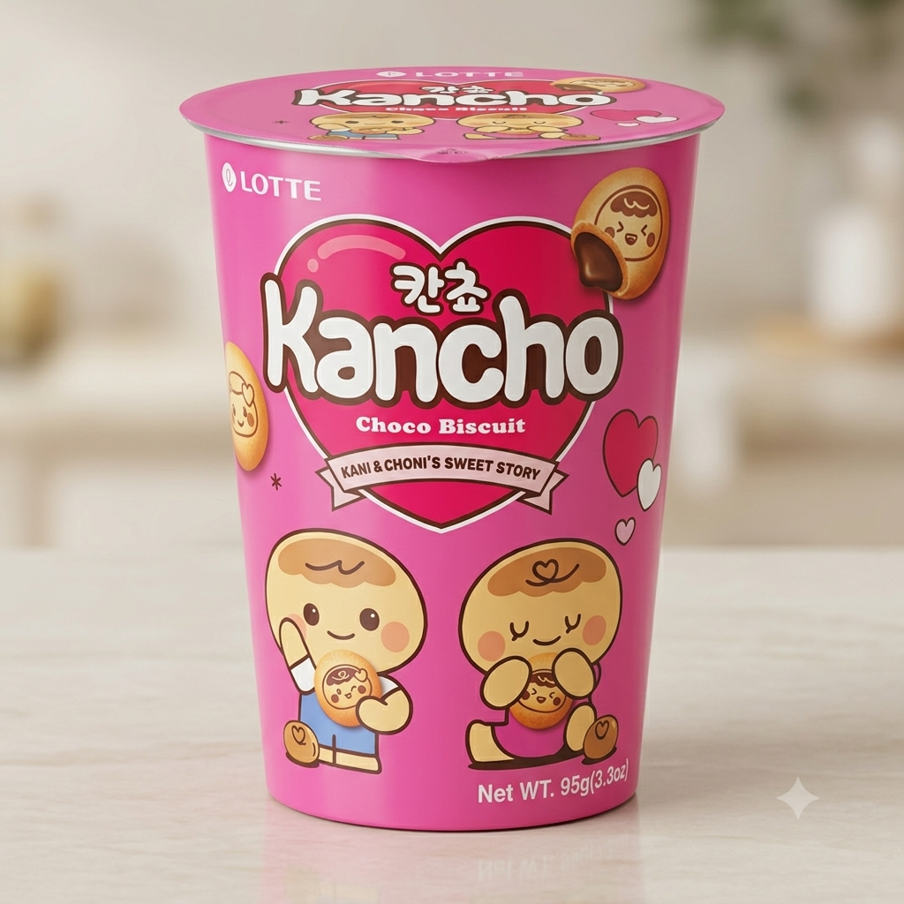
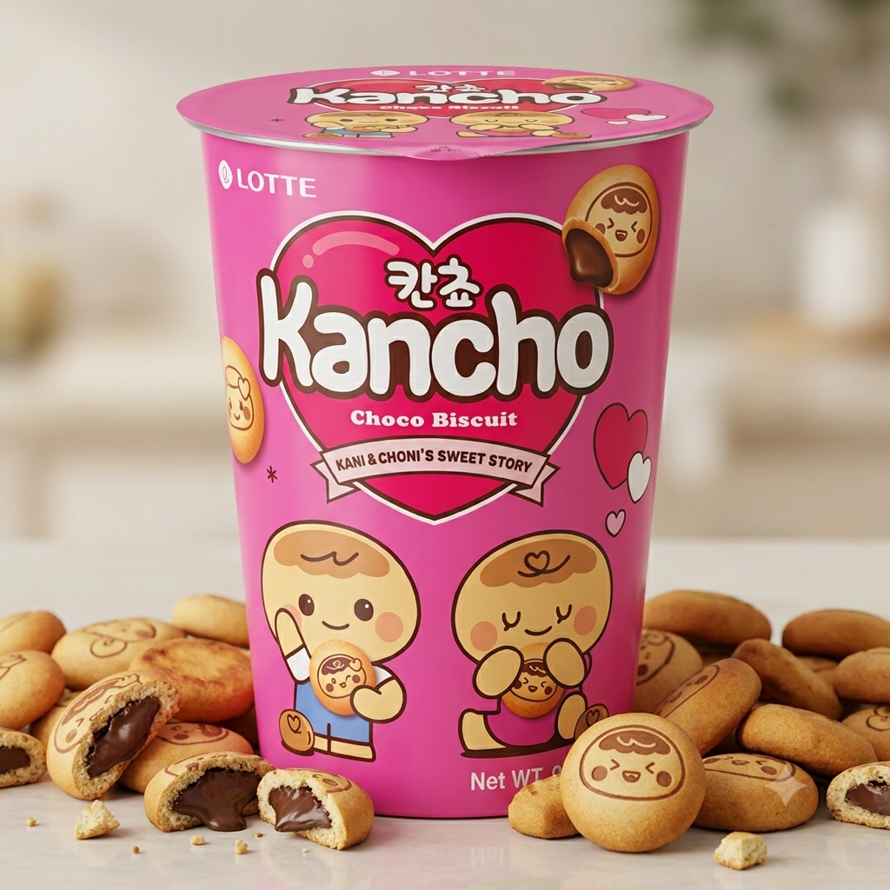

<div> <table style="border-collapse: collapse; width: 99.9809%;" border="1"><colgroup><col style="width: 49.9522%;"><col style="width: 49.9522%;"></colgroup> <tbody> <tr> <td> <div><span style="color: #000000; font-size: 14pt;"><strong>Lotte Biscuiti cu crema de ciocolata, 29g</strong></span></div> <div><span style="color: #000000; font-size: 14pt;">Descoperă celebrii biscuiți coreeni&nbsp;<b data-path-to-node="3" data-index-in-node="36">Lotte Kancho</b>: biluțe crocante, fin rumenite, imprimate cu personaje adorabile și umplute cu o cremă bogată de ciocolată. Sunt doza perfectă de dulce, ideali de &icirc;mpărțit cu cei dragi sau de savurat &icirc;n momentele tale de răsfăț. &Icirc;i &icirc;ncerci?</span></div> </td> <td></td> </tr> <tr> <td></td> <td><span style="font-size: 14pt; color: #000000;">Fiecare biscuite <b data-path-to-node="4" data-index-in-node="17">Lotte Kancho</b> ascunde o inimă generoasă de ciocolată fină, &icirc;nvelită &icirc;ntr-o crustă rumenită și crocantă. Cu ilustrații adorabile pe fiecare biluță, sunt gustarea coreeană ideală care &icirc;ți transformă pauza &icirc;ntr-un moment de răsfăț absolut. Te poți opri la unul singur?</span></td> </tr> </tbody> </table> </div>